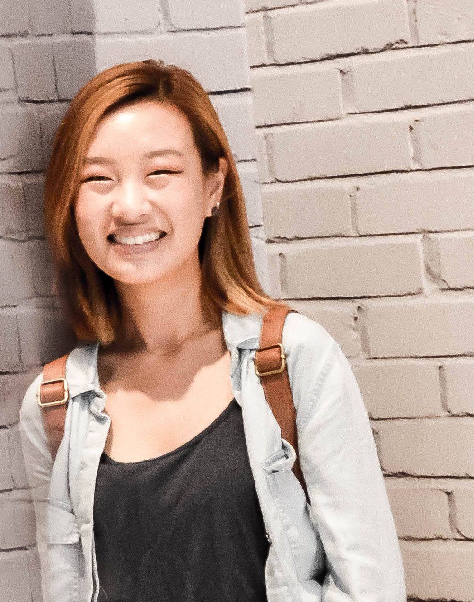

Katelyn Trinh is an aspiring undergraduate student at California State University, East Bay. She specializes in graphic arts, playing with childlike concepts and bright colors that catch are fun and eye-catching. She is constantly inspired by the imagination and fantasy of The Walt Disney Company and several different toy brands. She is also currently employed by the LEGO group, another source of inspiration for the last 5 years and will continue to contribute to her artistic sense.